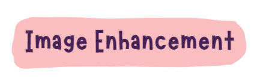

Summary
flowchart LR;
id1[Correction]-->id11[Geometric];
id11-->id111[From input original data to rectified ];
id11-->id112[Assess with RMSE - lowest RMSE will fit best];
id11-->id113[Resample methods];
id113-->id1131[Nearest neighbor];
id113-->id1132[Linear];
id113-->id1133[Cubic];
id113-->id1134[Cubic spline];
id1-->id12[Atmospheric];
id12-->id121[Relative];
id121-->id1211[Dark object substraction - DOS];
id121-->id1212[Psuedo-invariant Features - PIFs];
id12-->id122[Absolute];
id122-->id1221[Make a model from the atmospher]
id122-->id1222[Py6S]
id122-->id1223[Absolute data requirements]
id122-->id1224[Absolute tools]
id122-->id1225[Empirical line correction]
id1225-->id12251[Path radiance]
id1225-->id12252[Atmospheric attenuation]
id122-->id1226[Irradiance & radiance]
id1-->id13[Orthorectification / Topographic];
id13-->id131[Removing distortions]
id131-->id1311[Sensor geometry]
id131-->id1312[An elevation model]
id13-->id132[Cosine correction]
id132-->id1321[Radiance from sloped terrain]
id132-->id1322[Solar zenith angle]
id132-->id1323[Sun's incidence angle]
Joining data sets in remote sensing, specifically mosaicking, is a common technique used to create seamless images from multiple smaller images captured by a sensor
Mosaicing is the process of stitching together multiple remote sensing images to create a single image that covers a larger area than any of the individual images could capture. This is typically done by aligning the individual images and blending them together to create a seamless result.
Mosaicking remote sensing data:
Preprocessing: Before the mosaicking process can begin, the individual images need to be preprocessed to ensure that they are properly aligned and have the same radiometric properties (brightness and contrast). This may involve correcting for differences in atmospheric conditions, sensor characteristics, and other factors that can affect the quality of the image.
Georeferencing: To ensure that the individual images align properly, they need to be georeferenced, or assigned a specific location on the Earth’s surface. This involves identifying specific features in the images that can be matched to known locations on a map or in a geographic information system (GIS).
Blending: Once the individual images are properly aligned and georeferenced, they need to be blended together to create a seamless result. This may involve adjusting the brightness and contrast of the images, as well as using techniques such as feathering and smoothing to create a smooth transition between adjacent images.
Output: The final output of the mosaicking process can take many forms, depending on the intended application. This may include a single image that covers a large area, a series of smaller images that can be tiled together, or a mosaic that combines multiple images into a single seamless result.

Image enhancement techniques are used to improve the visual quality of remote sensing data, to increase the accuracy of image interpretation, and to prepare data for analysis. Some commonly used techniques:
Ratio: Ratio image enhancement is used to highlight certain features in remote sensing data. It involves dividing two bands of a multi-spectral image to create a new image, where each pixel represents the ratio of the two bands. Ratio enhancement can be used to identify features such as vegetation, soil moisture, and water quality.
Filtering: Filtering is used to remove noise from remote sensing data and to enhance certain features. There are many different types of filters that can be used, including mean, median, and Gaussian filters. Each filter has different strengths and weaknesses, and the choice of filter will depend on the specific application.
Principal Component Analysis (PCA): PCA is a technique used to reduce the dimensionality of multi-spectral images. It involves transforming the data into a new set of variables that represent the most important features of the image. PCA can be used to enhance certain features, reduce noise, and compress the data.
Texture: Texture analysis is used to identify patterns in remote sensing data. It involves analyzing the spatial arrangement of pixels in an image to identify areas with similar texture. Texture analysis can be used to identify features such as forests, urban areas, and water bodies.
Fusion: Image fusion is used to combine information from multiple sources to create a single image with enhanced information content. This can include combining multi-spectral and panchromatic data, or combining data from different sensors. Image fusion can be used to enhance the visual quality of an image and to improve the accuracy of image interpretation.
Applications
Assessment of temporal variations of water quality in inland water bodies using atmospheric corrected satellite remotely sensed image data (Hadjimitsis and Clayton 2009)
This paper discusses the problem of atmospheric intervention in satellite remote sensing data when monitoring water quality in inland water bodies such as reservoirs, lakes, and dams. The authors propose a simple methodology for monitoring and assessing temporal variations of water quality using an earth observation-based approach. The proposed method involves selecting a sampling area on the image, applying masking and convolution image processing filters, and using the darkest pixel atmospheric correction. The authors applied the method to a series of eight archived Landsat-5 TM images of the Lower Thames Valley area in West London and the Kourris Dam in Cyprus. They found that atmospheric correction is essential for water quality assessment studies using satellite remote sensing data as it significantly improves the water reflectance and enables effective water quality assessment to be made.
Radiometric Calibration for Multispectral Camera of Different Imaging Conditions Mounted on a UAV Platform (Guo et al. 2019)
This paper discusses the importance of radiometric calibration in using unmanned aerial vehicle (UAV) multispectral images for quantitative remote sensing (QRS) in ecological and agricultural applications. The authors propose a systematic radiometric calibration method using linear regression to generate multispectral images with unit reflectance, which can then be used to calculate vegetation indices for monitoring vegetation phenology. The study evaluates the effects of different flight altitudes, time instants, and weather conditions on radiometric calibration using a Mini Multiple Camera Array (MCA) 6 camera. The authors find that three calibration targets (dark, moderate, and white) are optimal for the Mini MCA 6 camera and that atmospheric effects increase with flight altitude but the camera effect and atmospheric attenuation to reflectance are relatively low. The study shows that the linear regression method performs well in all weather conditions and proposes a universal calibration equation suitable for images acquired during a sunny day or even with some clouds. Overall, the paper demonstrates the importance of radiometric calibration in using UAV multispectral images for QRS and provides a systematic method for calibration.
Reflection
Learning about correction in remote sensing data and its applications is essential for anyone interested in working with remote sensing data for scientific or practical purposes.
Improves data accuracy: The accuracy of remote sensing data is often affected by atmospheric conditions, sensor calibration, and other factors. Correction techniques can help to remove or reduce these errors and improve the accuracy of the data.
Enables comparative analysis: With corrected remote sensing data, it becomes possible to compare data from different sensors, times, and locations with greater accuracy. This allows researchers to detect changes and trends over time and space.
Enhances interpretation: Corrected remote sensing data provides a more accurate representation of the Earth’s surface, which enhances the interpretation of features and phenomena. This, in turn, can lead to better decision-making in various fields, including agriculture, forestry, urban planning, and environmental management.
Increases efficiency: Corrected remote sensing data can save time and resources by reducing the need for ground-based measurements and increasing the speed and accuracy of data analysis.
Provides new insights: Corrected remote sensing data can reveal information that is not visible to the naked eye or easily detectable with ground-based measurements. This can lead to new insights and discoveries in various fields of research.
In summary, learning correction in remote sensing data and its applications is crucial for improving the accuracy, efficiency, and interpretation of remote sensing data, as well as for making new discoveries and driving progress in various fields of research and practice.
Guo, Yahui, J. Senthilnath, Wenxiang Wu, Xueqin Zhang, Zhaoqi Zeng, and Han Huang. 2019.
“Radiometric Calibration for Multispectral Camera of Different Imaging Conditions Mounted on a UAV Platform.” Sustainability 11 (4).
https://doi.org/10.3390/su11040978.
Hadjimitsis, Diofantos G., and Chris Clayton. 2009.
“Assessment of Temporal Variations of Water Quality in Inland Water Bodies Using Atmospheric Corrected Satellite Remotely Sensed Image Data.” Environmental Monitoring and Assessment 159 (1): 281–92.
https://doi.org/10.1007/s10661-008-0629-3.